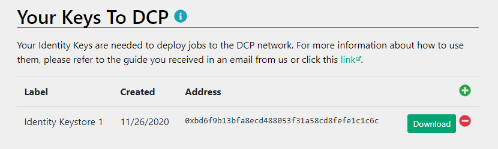
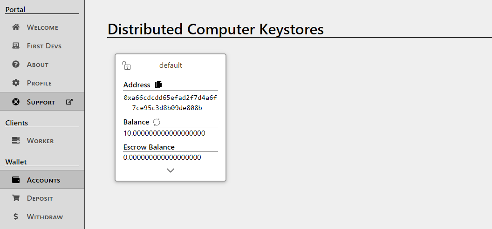
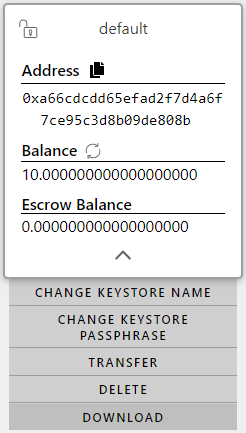

Getting setup
Before you are able to deploy jobs on DCP, you need two types of API keys (called ‘keystores’).
An Identity Keystore: This keystore acts as your personal credentials for using DCP. Identity Keystores are also called Identity Keys, ID Keys, etc.
An Account Keystore: This keystore keeps track of the amount of value (called ‘credits’) that you have available.
Downloading Keystores
You can download both Identity and Account keystores from the DCP Portal, which also shows the amount left in your Account Keystore.
Identity Keystores
From the First Devs tab in the Portal, you can provision, download, and revoke all Identity Keystores, once you have made an account.

Provisioning
You can provision new Identity Keystores by clicking the green “+” in the top-right of the table on this page. This prompts you to enter a label (required) and then the generated key appears in the table.
Downloading Identity Keystores
You can download an Identity Keystore by clicking on the green download button. This prompts you to enter an optional passphrase to encrypt the keystore.
Note
Hit ‘Continue’ without entering anything in the passphrase field to leave them unencrypted.
You are then prompted to save the keystore file with the default name id.keystore.
It’s recommended to save your id.keystore file in your home directory at /home/<YOUR_USER_NAME>/.dcp/id.keystore (Linux & macOS), or C:\Users\<YOUR_USER_NAME>\.dcp\id.keystore (Windows). This is the default location where DCP’s APIs look to find your identity keystore, which it needs to deploy a job.
Note
It’s recommended to not change the name of the id.keystore when you save it.
Revoking
You can revoke Identity Keystores by clicking the red “-” to the right of the download button. Any keystore files that you have downloaded stop working.
Account Keystores
Your Account Keystores are visible in the Accounts page on the Portal. Your account comes with a ‘default’ Account Keystore, which has a balance of 0 credits.

You can use any Account Keystore to earn credits using the Portal’s in-built Worker tab. Go to the Worker tab and click the green “Start” button. The worker starts using your computer’s processing power to complete computational jobs in exchange for credits that you can use to deploy your own work. You can stop this at any time by clicking “Stop” or by exiting the browser tab. You can earn credits in more ways at no cost.
Downloading Account Keystores
You can download your Account Keystores from the Accounts page by clicking the arrow at the bottom of the keystore card, and then clicking “Download.” It’s recommended to save this keystore file in your home directory at /home/<YOUR_USER_NAME>/.dcp/default.keystore (Linux & macOS), or C:\Users\<YOUR_USER_NAME>\.dcp\default.keystore (Windows). This is the default location where DCP’s APIs look to find your Account Keystore, to deploy a job.

Note
It’s recommended to not change the name of the default.keystore file when you save it.
Using Keystores in web apps
Providing the Account Keystore to deploy jobs from your browser is straightforward. The dcp-client APIs automatically prompt you to upload your Account Keystore when you start deploying the job.
Note
The following is a temporary solution. It exposes your (revocable) Identity Keystore to the public. A planned long-term solution to this issue is to make DCP compatible with the OAuth protocol.
To provide your Identity Keystore to launch a job (which DCP requires alongside your Account Keystore), you must include your Identity Keystore in the web directory where your HTML file is. The dcp-client APIs looks for it when deploying your job, and warns you in the console if it couldn’t locate it.
Here is an example of a directory structure and how it might lay out your app:
public
|-- index.html
`-- id.keystore
Note
Most of the ‘vanilla web’ HTML examples in this documentation have already indicated the Identity Keystore. Hence, when an example asks you to upload your ‘keystore’ to launch a job, it’s asking for your Account Keystore. This isn’t the case for vanilla web jobs that you build yourself, which should follow the directory structure provided earlier.
Using Keystores in Node.js apps
Using dcp-client APIs to build Node.js apps is even easier - the library looks for your keystores in the default location, .dcp in your home folder. This is what your .dcp folder looks like:
.dcp
|-- default.keystore
`-- id.keystore
If the dcp-client APIs can’t find your keystores, it displays an error stating where dcp-client searched for the files. You have to move your keystores into the appropriate file locations described earlier to launch a job without error.
Getting started
You are now ready to start deploying DCP jobs. Follow through the rest of the getting started guide to deploy your first DCP app.